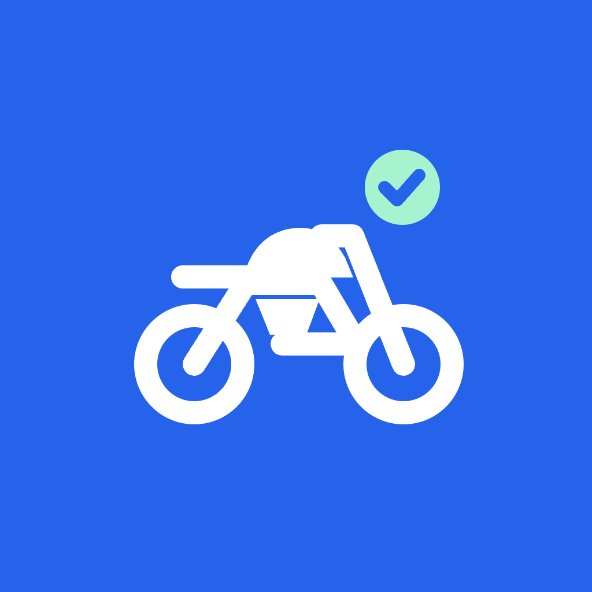
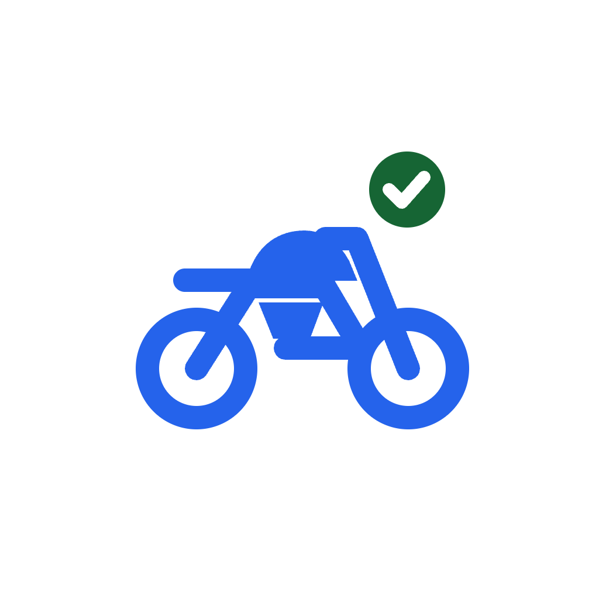

Ikon aplikasi

Biru utama / #2563EB
Android adaptive + monochrome
iOS 1024 px, tanpa alpha
Motor terawat, perjalanan lebih tenang.

Biru utama / #2563EB
Android adaptive + monochrome
iOS 1024 px, tanpa alpha

Latar #F4F6F9. Logo di tengah.

Latar #0D131D. Mengikuti tema sistem.
Preview komposisi, bukan tangkapan layar perangkat. Masker ikon dan ukuran splash Android 12+ mengikuti sistem operasi.